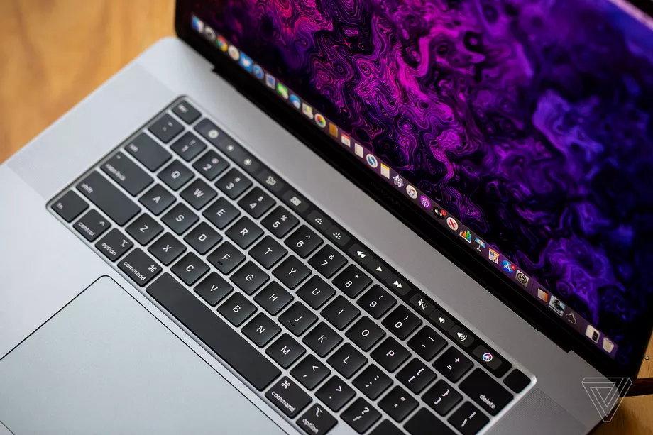
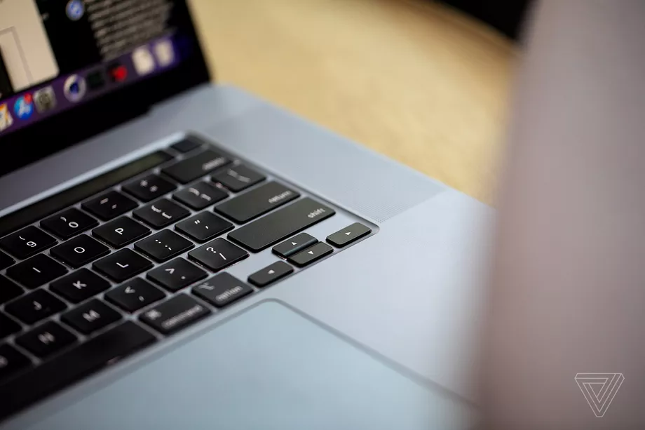
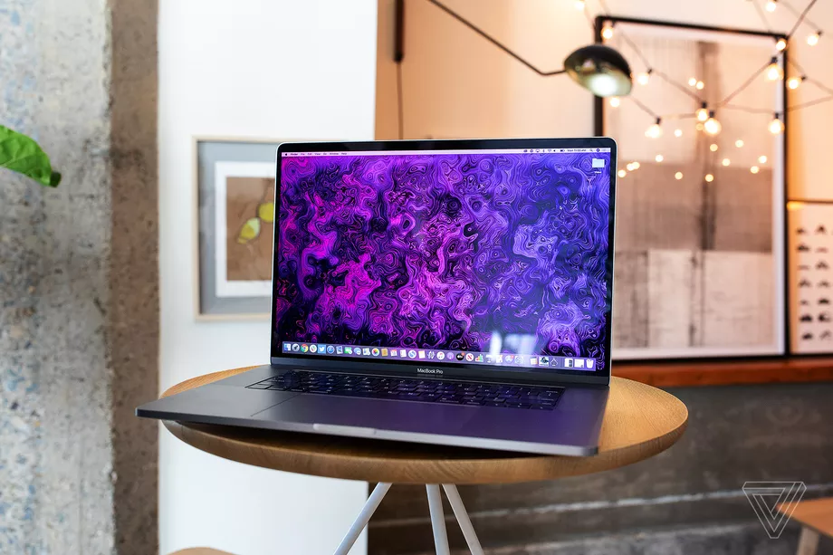
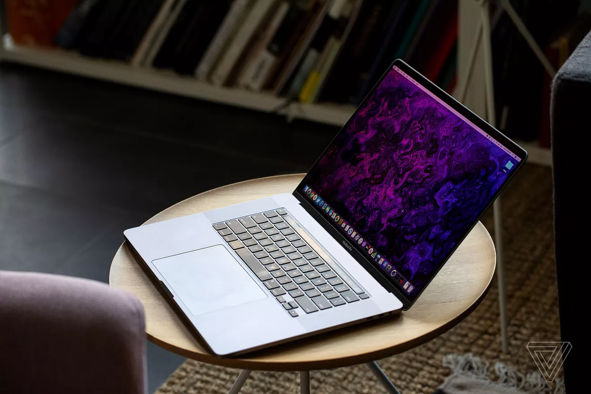

MacBook Pro (16-inch, 2019)




Items in stocks : 41
While we are sad that the 15-inch MacBook Pro is no more, we’ve welcomed the MacBook Pro (16-inch, 2019) with open arms. As thin, light and sleek
as ever, you wouldn’t think this was a 16-inch behemoth.
Yet, you’re getting that extra real estate on that stunning display, as well as the latest and greatest components behind it. This is, without a doubt, the best
MacBook for content creators, designers and other creative professionals. With amazing (and loud) speakers and a much, much better keyboard to boot.
Here is the 16-inch MacBook Pro (2019) configuration sent to TechRadar for review:
- CPU:2.3GHz Intel Core i9 processor (octa-core, up to 4.8GHz)
- Graphics:AMD Radeon Pro 5500M with 4GB of GDDR6
- RAM:16GB (2,666MHz DDR4)
- Screen:16-inch, 3,072 x 1,920 Retina display (backlit LED, IPS, 500 nits brightness, wide color P3 gamut)
- Storage: 1TB SSD
- Ports: 4x Thunderbolt 3 (USB-C), 3.5mm headphone jack
- Connectivity:802.11ac Wi-F, Bluetooth 5.0
- Camera: 720p FaceTime HD webcam
- Weight:4.3 pounds (2kg)
- Size:0.64 x 14.09 x 9.68 inches (1.62 x: 35.79 x 24.59cm; W x D x H)